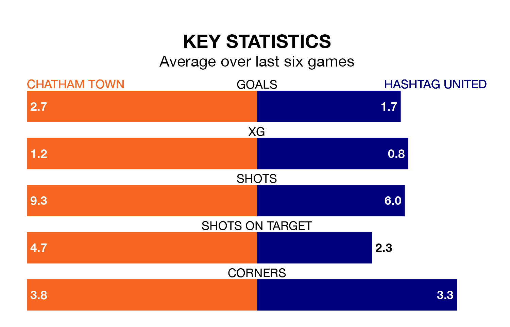

Chatham Town and Hashtag United come into Tuesday's late kick-off in contrasting spells, with the home team hitting a rich vein of form while the visitors struggle.
Chatham have won five and lost one of the last six, while Hashtag have taken just one draw.
With 53 goals in 26 games so far this season, Chatham are the league's second-highest scorers with 2.0 goals per game. And they are conceding fewer than average, letting in 34 goals at a rate of 1.3 per game.
Hashtag, meanwhile, are average scorers, with 1.6 goals per game. They have conceded 1.7 goals per game.
Town are second in the table after 26 games, of which they have won 16 and drawn four, earning 52 points.
United are 10 places behind the home side in 12th, with nine wins and nine draws putting them on 36 points.
Chatham's last match was on Saturday, a 5-1 win against Canvey Island.
Hashtag lost 2-0 against Hastings United last time out, also on Saturday.
Updated: 09:21 (UTC), 30/01/24